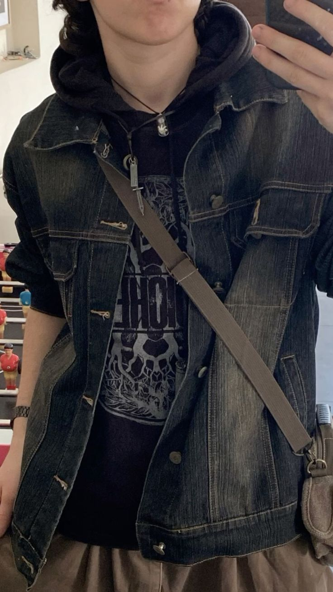
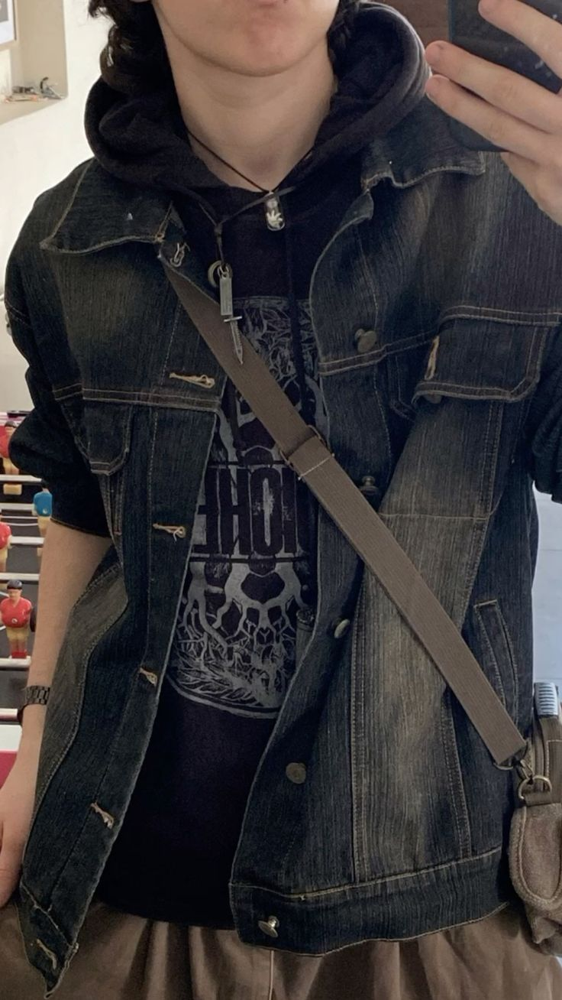
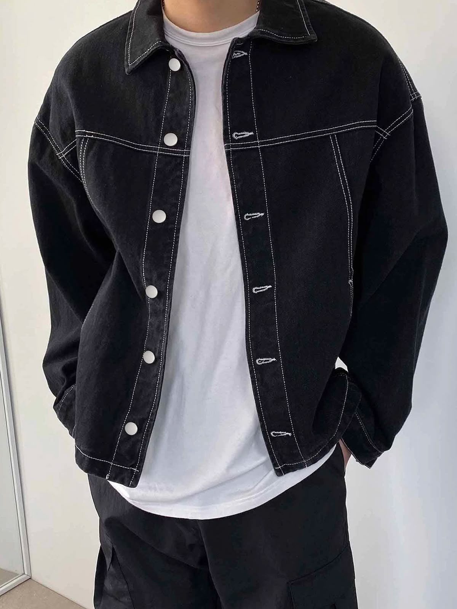
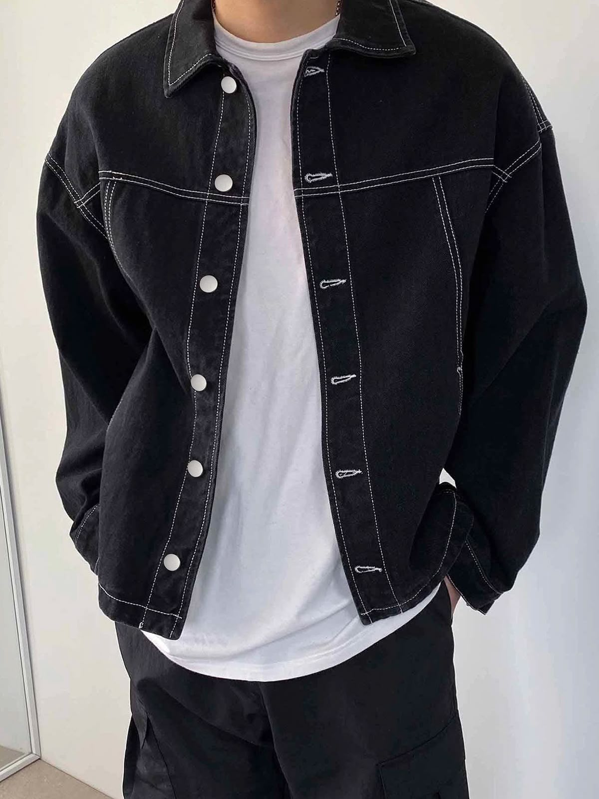

Steven Baptise
19
Edad Rojo
Color 30/06
Cumpleaños
Edad Rojo
Color 30/06
Cumpleaños
Es el menos abierto y extrovertido del grupo.
Mayor miedo: Ser igual a su padre.
Mayor sueño: Una familia unida y por fin encontrar su propósito.
Hobbies: Cocinar, tocar la bateria, Gym y enseñar.
 

 
